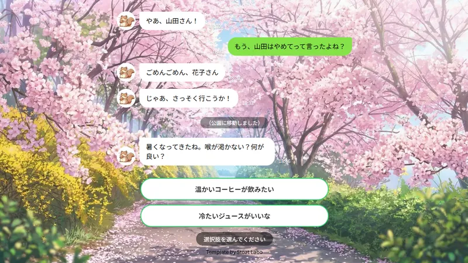

手書きHTMLで簡単作成！タップでメッセージが進むチャット小説用コード

「pixiv」「テラーノベル」「カクヨム」といった小説投稿サイトや、「フォレストページ＋」で作成されたサイトなどで見かける「LINE風小説」。その名の通り、アプリの「LINE」でチャットをしているような画面でキャラクターの会話を進行させるという独特の文章形態です。
それをHTMLで作成した個人サイトでも楽しめるようにしよう！ というのがこのテンプレートです。
まずはこのページの最下部にある「コードをコピーする」ボタンからコードを取得し、ご利用のエディタの編集画面に貼り付けてください。
その後、コードを編集して <script> タグ内にある scenarios のデータ部分を書き換えることで会話を作成できます。
1つのメッセージは { }（波かっこ）で囲んで記述し、カンマで繋ぎます。
const scenarios = {
// 最初の共通ルート
start: [
// 相手のメッセージ（左側表示）
{
type: 'left',
name: 'キャラA',
icon: '../images/icon.webp',
text: 'やあ、{{surname}}さん！',
time: '18:30'
},
// 自分のメッセージ（右側表示）
{
type: 'right',
name: '自分',
text: 'もう、{{surname}}はやめてって言ったよね？',
time: '18:31'
},
// 相手のメッセージ（左側表示）
{
type: 'left',
name: 'キャラA',
icon: '../images/icon.webp',
text: 'ごめんごめん、{{name}}さん',
time: '18:32'
},
'left'（左側・相手）または 'right'（右側・自分）を指定します。{{name}} と書くと読者が入力した名前に、{{surname}} と書くと苗字に自動変換されます。各メッセージの icon: '画像パス' の部分（デフォルトでは '../images/icon.webp'）をご自身の画像ファイルに書き換えてください。
文章内に表示されるデフォルトの名前は script のいちばん上にある、下記の部分を書き換えることで変更できます。
body {
const defaultSurname = '山田';
const defaultName = '夢子';
}名前の入力画面に表示される文字を変更するときは、 コード内の名前の設定 部分の文字を書き換えてください。
CSSの body スタイル部分に背景画像を指定できます。 ../images/picture08.webp の部分をご自身の画像ファイルに書き換えてください。
body {
background-color: #7494c0; /* 背景画像を使わない・読み込み前のデフォルト色 */
background-image: url("../images/picture08.webp"); /* ★背景画像のパスを指定 */
background-size: cover;
background-position: center;
background-attachment: fixed;
}background-image の行を削除しておくと、デフォルトの青い背景が適用されます。
時間の経過や場所の移動を表現したい時は、メッセージデータに type: 'system' と bg: '画像パス' を指定します。 ../images/picture12.webp の部分をご自身の画像ファイルに書き換えてください。 text に入力した文字は、中央寄りのシステム通知風デザインで表示されます。
// 画面タップで背景が切り替わり、システムメッセージが表示されます
{
type: 'system',
bg: '../images/picture12.webp', // ★変更したい背景画像パス
text: '（公園に移動しました）'
}このメッセージが表示されるタイミングで背景画像がふわっと切り替わります。
シナリオ（scenarios）の中に選択肢データと、分岐先のルートを作成することでゲームのように分岐する会話を作成できます。
{
type: 'left',
name: 'キャラA',
text: '暑くなってきたね。喉が渇かない？何が良い？',
time: '18:46'
},
// 選択肢の表示
{
type: 'choice',
choices: [
{ label: '温かいコーヒーが飲みたい', nextRoute: 'route_coffee' },
{ label: '冷たいジュースがいいな', nextRoute: 'route_juice' }
]
}
],
// 分岐ルートA：コーヒーを選んだ場合
route_coffee: [
{
type: 'right',
name: '自分',
text: '温かいコーヒーが飲みたいかも！',
time: '18:47' },
{
type: 'left',
name: 'キャラA',
text: 'いいね、{{name}}さんはブラック派だっけ。じゃあ近くのカフェに行こう！',
time: '18:48'
}
],
// 分岐ルートB：ジュースを選んだ場合
route_juice: [
{
type: 'right',
name: '自分',
text: '冷たいジュースがいいな！',
time: '18:47' },
{
type: 'left',
name: 'キャラA',
text: '了解！自販機で冷たいジュース買ってくるね！',
time: '18:48'
},
nextRoute で指定した名前（例: route_coffee）と、次に読み込ませたいメッセージ配列の名前を一致させることで、指定したメッセージを表示できます。選択肢は何個でも増やせます。
ルート分岐の後に共通ルートへ進ませたい場合は 「シナリオデータに新しいルートを追加する」 ことと、 「各分岐ルートの最後に分岐処理を入れる」 ことが必要になります。
const scenarios = {
// 分岐ルートB：ジュースを選んだ場合
route_juice: [
{
type: 'right',
name: '自分',
text: '冷たいジュースがいいな！',
time: '18:47' },
{
type: 'left',
name: 'キャラA',
text: '了解！自販機で冷たいジュース買ってくるね！',
time: '18:48'
},
// 合流ルートへ進むためのボタン（両方のルートの最後に設置します）
{
type: 'choice',
choices: [
{ label: 'ベンチで待つ', nextRoute: 'route_common_after' },
]
}
],
// 合流ルート（分岐後に合流する共通の会話）
route_common_after: [
{
type: 'left',
name: 'キャラA',
text: 'ふぅ、一息ついたら次はどこへ行こうか？',
time: '19:01'
},
{
type: 'right',
name: '自分',
text: 'そうだね、夕方になってきたしそろそろ帰ろうか。',
time: '19:02'
}
]
};
シナリオを書く際は、 記号のつけ忘れ・外し忘れによるエラー にご注意ください。
要素と要素の区切りには必ずカンマ（ , ）が必要です。
route_coffee: [ ... ], の末尾など） { ... }, の末尾など）最後の要素の末尾カンマは省略可能ですが、直後に新しい項目を追加した時にカンマを付け忘れてエラーになるパターンが非常に多いです。新しい会話を追加した時は、直前の行の末尾にカンマがあるかを確認してください。
カッコの種類によって意味が異なります。
「ルートの名前（route_common_after:など）は [ で開いて ] で閉じているか」、「1つのメッセージは { で開いて } で閉じているか」をセットで確認してください。
文字列を囲む引用符が閉じていなかったり、文章内でうっかり使ってしまうとエラーになります。
text: 'じゃあ、行こう！' （前後に ' があるかを確認）コードを変更した後に画面が真っ白になったり、タップしても進まなくなった場合は、ブラウザで F12キー を押し、「コンソール（Console）」タブを開いてみてください。赤文字で「SyntaxError: Unexpected token...」などのエラーが出ている場合、記号（カンマやカッコ）の位置がずれている場所を教えてくれます。